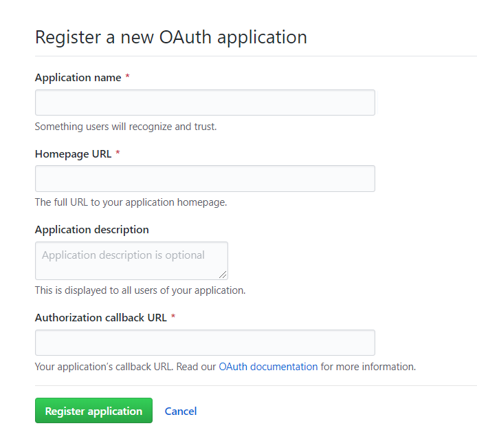
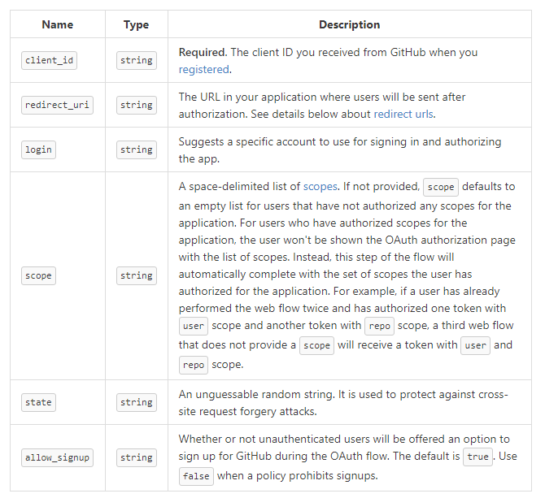
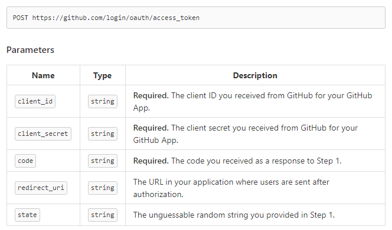

OAuth 2.0 认证原理与实践
本文以 Github 为例，通过具体实践来详细描述 OAuth 2.0 认证的原理与流程
比如 CSDN 在登录的时候，用户可以选择 QQ、微信、GitHub 登录等，本文以 Github 为例，通过具体实践来详细描述 OAuth 2.0 认证的原理与流程
认证流程大致可分为一个前置和三个后置步骤
- 前置步骤
- A. 网站在 Github 注册授权应用
- 后置步骤(认证流程)
- B. 用户通知 Github 允许将自己的有限信息透露给该网站，网站获得授权码
- C. 网站通过授权码获得 access_token
- D. 网站通过 access_token 获得用户 Github 端的信息
下面依次介绍 A、B、C、D 四个步骤
步骤 A
在 Github developers 点击 New OAuth App 按钮注册一个 OAuth 应用

Authorization callback URL 这一项是授权后重定向的地址，步骤 B 会介绍它
注册应用后会生成 Client ID 与 Client Secret, 它们分别用在 B 与 C 步中
步骤 B
用户选择了使用 Github 登录后，会跳转到 https://github.com/login/oauth/authorize ，url query 如下

- client_id 即 A 步骤中获得的 Client ID
- redirect_uri 即授权后重定向的页面，它需要是 A 步骤中 Authorization callback URL 的子域名
- state 随机生成的字符串，防御 CSRF 攻击，步骤 C 中会介绍它
在用户授权了之后，页面会重定向到 _redirect_uri_，同时 url query 上会自动带上 Github 提供的授权码 code
步骤 C
此时可以通过 GET 请求访问 https://github.com/login/oauth/access_token 来获得 access_token, Github 官方文档对于这步的介绍很容易误导人
- client_id 与 client_secret 即步骤 A 中的 Client Secret, code 即步骤 B 中提供的授权码，state 即步骤 B 中的，两个 state 需要一样，因为步骤 B 中获得的 code 与授权用户是无关的，所以缺少 state 的情况下可能被攻击者利用已获得的授权码来进行 CSRF 攻击
- 这一步应该在服务端进行，因为要传输 _Client Secret_，缺少服务器的情况下可以考虑使用简单模式
- 即使想在客户端直接请求也做不到，因为该接口不支持 CORS 协议，所以 POST 请求肯定是无法用的。尝试 使用 GET 请求发现能返回 access_token 但是返回的数据格式为 application/x-www-form-urlencoded 所以也无法使用 JSONP(必须是 “application/javascript” 相关的类型 script 脚本才能执行网络请求否则只会当成代码块)
- code 等数据需要作为 url query 而不是在请求体中发送
- Github 常年被墙，所以对于安全性要求不高应用推荐使用 https://cors-anywhere.herokuapp.com/https://github.com/login/oauth/access_token 进行转发，具体用法可以点击这里，即使国内网络也能正常请求
步骤 D
通过 GET https://api.github.com/user?access_token 即可获取用户授权的有限信息